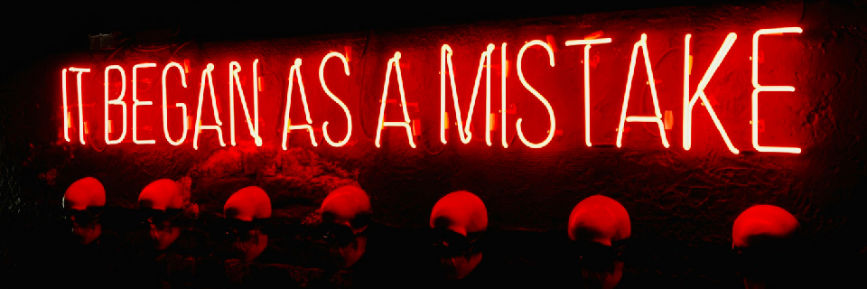
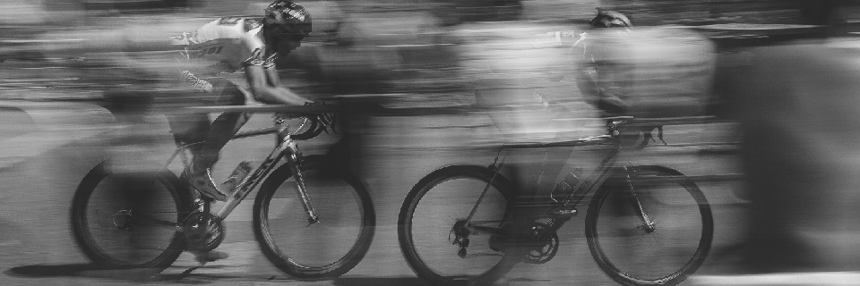

Septembre - Novembre

Durée : 8 Semaines.
Phase : Préparation générale
| Fréquence |
Type d'effort |
Description |
| 2x par semaine |
Endurance / Cardio |
Rythme modéré, Course ou Natation Objectif : 45-60min |
| 2x par semaine |
Renforcement musculaire |
3 séries:
10 Squats , 20 fentes, 1min planche, 15 pompes |
| 1x par semaine |
Souplesse / Mobilité |
Yoga ou stretching pour améliorer la flexibilité et prévenir les blessures. |
Décembre - Mai
Durée : 16 Semaines.
Phase : Perfectionnement de l'état général
| Fréquence |
Type d'effort |
Description |
| 1x par semaine |
Endurance longue |
Rythme constant, Course
Objectif : 60-90 min |
| 2x par semaine |
Resistance à l'effort |
Fractionné de haute intensité
5 min echauffement lent
10 rep (30 sec intense - 30 sec lent)
5 min de récup |
| 2x par semaine |
Renforcement musculaire lesté |
3 séries:
15 Squats , 20 fentes, 1'30 planche, 20 pompes |
Juin - Juillet

Durée : 8 Semaines.
Phase : Prise en main du vélo
Semaine A
| Fréquence |
Type d'effort |
Description |
| 2x par semaine |
Sorties en vélo longues |
1h30-2h à intensité modérée. Focus sur la technique (positionnement, pédalage fluide). |
| 1x par semaine |
Renforcement musculaire ciblé |
Séance avec un focus sur les jambes
3 série : 10 squats, 20 fentes, 16 squats bulgare. |
| 1x par semaine |
Cardio croisé |
Course ou natation pour maintenir l’endurance
Pas de vitesse, 45min |
Semaine B
| Fréquence |
Type d'effort |
Description |
| 1x par semaine |
Fractionnés en vélo |
Sortie Soutenue avec accélérations en côtes ou sprints pour améliorer la puissance. |
| 1x par semaine |
Sorties longues |
Sortie de 2h30-3h, travaille sur la gestion d’effort et l’endurance. |
| 1x par semaine |
Renforcement musculaire léger |
Même programme, réduction des charges / répétitions pour éviter de surcharger le corps. |
Août - maillot Jaune

Durée : 3 Semaines.
Phase : Objectif champions du monde
| Fréquence |
Type d'effort |
Description |
| 1x par semaine |
Simulation de course |
100km dans les puys d'auvergne
Objectif : reproduire notre course, apprendre à rouler ensemble |
| 1x par semaine |
Sortie de 3 ou 4 heures |
Endurance de longue durée |
| Les autres jours |
Repos actif et récupération |
Priorise la récupération avec du stretching, du yoga, et de courtes sorties à faible intensité |